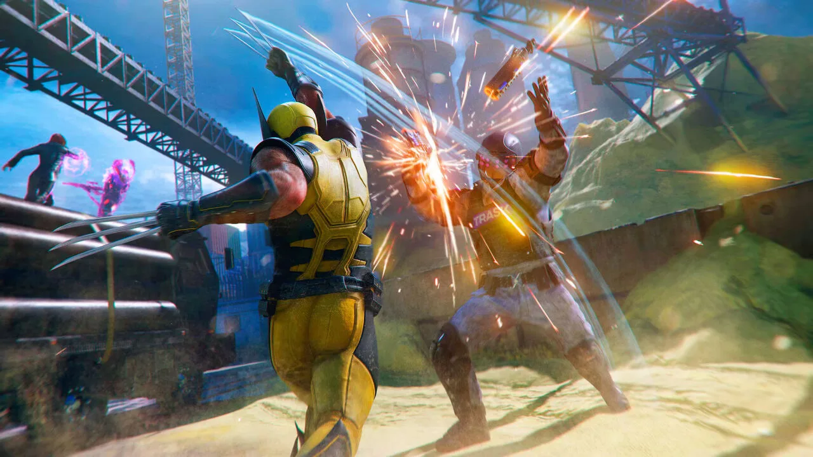

Luiso · 14 de septiembre de 2026 · 3 min de lectura
Una de las características que más llamó la atención de Marvel's Wolverine desde sus primeras presentaciones fue una decisión poco habitual para Insomniac Games: el estudio decidió no repetir la fórmula de mundo abierto utilizada en sus juegos de Marvel's Spider-Man.
Ahora, una entrevista publicada por el medio japonés AUTOMATON permite conocer mejor las razones detrás de esa elección. Los desarrolladores explicaron que el objetivo era construir una experiencia con un ritmo mucho más controlado, similar a una montaña rusa, donde la acción y los momentos narrativos pudieran sucederse con mayor intensidad.
La decisión cobra especial importancia porque Marvel's Wolverine no intenta simplemente convertir al personaje en una versión de Spider-Man con garras. Según explicó el equipo, la estructura del juego debía adaptarse a lo que significa controlar a Wolverine.
Para Insomniac, uno de los beneficios de una estructura más lineal es el control sobre lo que experimenta el jugador.
En lugar de ofrecer un enorme mapa abierto lleno de actividades secundarias, el estudio pudo diseñar situaciones específicas alrededor de la acción, la narrativa y los escenarios. El objetivo era que la aventura avanzara como una sucesión de grandes momentos, en lugar de que el jugador pudiera interrumpir constantemente el ritmo para dedicarse a actividades opcionales.
La entrevista también profundiza en la intención de mantener el juego funcionando a 60 FPS, algo particularmente importante para un título cuyo sistema de combate depende de movimientos rápidos y ataques cuerpo a cuerpo.
Otro de los puntos destacados durante la entrevista fue la violencia.
Wolverine no es Spider-Man y Insomniac quería que esa diferencia quedara reflejada en la jugabilidad. Las garras, las heridas y la brutalidad del combate forman parte de la identidad del personaje, por lo que el estudio decidió llevar ese aspecto mucho más lejos que en sus anteriores juegos de superhéroes.
Esto también explica parte de la presentación más sangrienta que caracteriza a Marvel's Wolverine: no se trata únicamente de una decisión estética, sino de una manera de representar cómo debería sentirse controlar a Logan.
La entrevista japonesa también aborda el trabajo conjunto entre los diferentes estudios internos de PlayStation y cómo Insomniac aprovechó la experiencia adquirida durante el desarrollo de Marvel's Spider-Man para abordar este nuevo proyecto.
La elección de una estructura lineal puede parecer extraña después del éxito de los juegos de Spider-Man, pero también permite entender mejor qué pretende ser Marvel's Wolverine.
Insomniac no buscó simplemente construir otro mundo abierto de superhéroes, sino una aventura donde el personaje, el combate y el ritmo fueran los elementos principales.
La recepción inicial del juego ya mostró que esta decisión genera opiniones divididas. Algunos análisis destacaron precisamente que su campaña más directa resulta refrescante frente a la tendencia de los grandes juegos a ampliar constantemente sus mapas, mientras que otros criticaron la menor libertad y variedad de la exploración.
Con esta entrevista, queda claro que esa diferencia no fue accidental: la estructura lineal de Marvel's Wolverine fue una decisión deliberada de Insomniac para construir una experiencia más concentrada y acorde con el personaje.